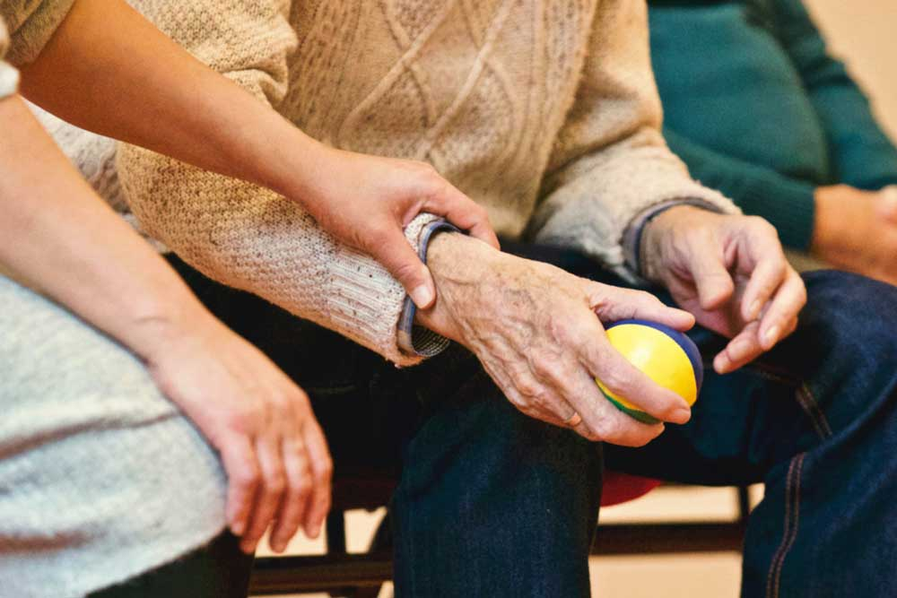

LUCÍA LUNA
CIPFP CANASTELL
Vols saber més?
Posa't en contacte amb el coordinadora Lucía Luna, tècnica de skills Atenció sociosanitària
lgonzalez@fpmislata.com
LUCÍA LUNA
CIPFP CANASTELL
Vols saber més?
Posa't en contacte amb el coordinadora Lucía Luna, tècnica de skills Atenció sociosanitària
lgonzalez@fpmislata.comInclou les cures i vigilància de l'estat d'un malalt: cura de les condicions sanitàries de l'entorn del pacient, col·laboració en la prestació de cures psíquiques al pacient i tasques d'instrumentació en equips de salut bucodental, entre altres.
A més, desenvolupa les activitats assistencials, no sanitàries, de les persones dependents des d'un punt de vista integral.
Cicles formatius relacionats
Aplicacions
Les aplicacions d'aquestes *skill es realitzen en dos sectors molt importants: sanitari i de serveis.
En el sector sanitari, desenvolupant les funcions d'auxiliar de clínica i constitueix la formació requerida per a treballar en el sector, tant públic com privat.
En el sector serveis, desenvolupant totes les funcions d'auxiliar en l'àrea de serveis personals d'atenció a la dependència, tant públic com privat.
LUCÍA LUNA
CIPFP CANASTELL
Vols saber més?
Posa't en contacte amb el coordinadora Lucía Luna, tècnica de skills Atenció sociosanitària
lgonzalez@fpmislata.com